Главная Курс Изучаем Таро Можно начать здесь
Таро: смотреть, понимать, читать У карт есть рисунок, история и характер движения. Будем узнавать их постепенно: через сравнение, небольшие расклады и собственные вопросы.
Здесь расклад — разговор о вопросе и следующем шаге, не прогноз.
Основная колода — Уэйт–Смит, рисунки Памелы Колман Смит. Ниже — все 78 карт с наблюдениями и учебными прочтениями курса. Изображение можно открыть крупнее по ссылке; его цвета могут различаться между изданиями.
Первые шаги
Можно начать отсюда: вся колода и первая карта Знать каббалу для этого не нужно. В уроке 21 — вся колода: двенадцать карт с картинками раскладываем по трём группам, глядя на сами карты. В уроке 22 рассматриваем Отшельника в три прохода: сначала смотрим, потом читаем Уэйта, потом задаём свой вопрос. Начинать можно с любого из двух: в первом круге курса Отшельник идёт раньше колоды. Дальше — «Двадцать встреч с Таро», а в конце этого блока — два урока о том, как каббалу и карты сравнивают и как считают по буквам. Лестница раскладов подождёт ниже, пока не захочется собирать карты вместе.
21 Как устроена колода Таро 22 Отшельник: от изображения к вопросу Двадцать встреч с Таро 25 От знакомой песни к языку карт 26 Как читать карту, не заучивая приговоры 27 Начало: Шут, Маг, Жрица, Императрица 28 Опора и направление: от Императора к Колеснице 29 Мера и перемены: Сила, Отшельник, Колесо, Правосудие 30 Пауза, завершение и настройка 31 Привязанность, разрыв и надежда 32 Открытость, ответ и целое 33 Жезлы: от искры до ноши 34 Кубки: встреча, память, желание 35 Мечи: мысль, решение, трудный разговор 36 Пентакли: труд, ресурс и устойчивость 37 Пажи и Рыцари: учиться и пробовать 38 Королевы и Короли: вместить и направить 39 Десять сефирот и сорок числовых карт 40 Четыре мира и четыре масти 41 Почему таблицы Таро не всегда совпадают 42 Одна карта: вопрос и внимательный ответ 43 Две карты: как возникает фраза 44 Три позиции и свой способ читать Каббала рядом с картами: сравнивать бережно, считать по буквам 23 Каббала и Таро: как сравнивать бережно 45 Гематрия: когда буквы становятся числами Вся ветвь раскладов
От первой карты к самостоятельному чтению Идите по порядку или возвращайтесь к тому навыку, который сейчас нужен. Вводные встречи находятся ниже; после них — конструкторы, 50 занятий о раскладах и итоговая мастерская.
Учимся видеть карту Изображение, детали, собственный вопрос; затем двадцать вводных встреч.
Пара Свяжите два действия и объясните, что меняет перестановка.
Тройка Найдите вклад третьей карты и смысл целого.
Устройство расклада · 12 занятий Четвёрки, пары пар, 2+3, две тройки; роли и расположение.
Древо · 8 занятий Различайте собственное соответствие карты и функцию её места.
Пути · 6 занятий Читайте Старший аркан как переход и связь в выбранной системе.
Придворные · 6 занятий Различайте ранг, масть и способ участия в ситуации.
Смешанное чтение · 6 занятий Соберите числа, пути и придворные в одно объяснение.
Ориентация · 6 занятий Заранее выберите правило работы с перевёрнутыми картами.
Динамика · 6 занятий Сравните версии и отдельно запишите жизненное наблюдение.
Самостоятельная мастерская · 8 практикумов Пройдите от помощи к своему раскладу, аргументам и пересмотру.
Перейти в мастерскую →
Что происходит между двумя картами? Выберите пару. Назовите действие каждой карты, затем соедините их одной фразой. Поменяйте порядок и посмотрите, как меняется история.
Конструктор всех пар и последовательностей →
Конструктор всех троек: что меняет третья карта →
Искусство расклада: отдельный модуль с каббалистической опорой →
Каббалистические соответствия, вопросы к связи карт, прямые и перевёрнутые положения, собственные записи.
Первая карта Шут Маг Жрица Императрица Император Иерофант Влюблённые Колесница Сила Отшельник Колесо Фортуны Правосудие Повешенный Смерть Умеренность Дьявол Башня Звезда Луна Солнце Суд Мир Туз жезлов Двойка жезлов Тройка жезлов Четвёрка жезлов Пятёрка жезлов Шестёрка жезлов Семёрка жезлов Восьмёрка жезлов Девятка жезлов Десятка жезлов Туз кубков Двойка кубков Тройка кубков Четвёрка кубков Пятёрка кубков Шестёрка кубков Семёрка кубков Восьмёрка кубков Девятка кубков Десятка кубков Туз мечей Двойка мечей Тройка мечей Четвёрка мечей Пятёрка мечей Шестёрка мечей Семёрка мечей Восьмёрка мечей Девятка мечей Десятка мечей Туз пентаклей Двойка пентаклей Тройка пентаклей Четвёрка пентаклей Пятёрка пентаклей Шестёрка пентаклей Семёрка пентаклей Восьмёрка пентаклей Девятка пентаклей Десятка пентаклей Паж жезлов Рыцарь жезлов Королева жезлов Король жезлов Паж кубков Рыцарь кубков Королева кубков Король кубков Паж мечей Рыцарь мечей Королева мечей Король мечей Паж пентаклей Рыцарь пентаклей Королева пентаклей Король пентаклей Вторая карта Шут Маг Жрица Императрица Император Иерофант Влюблённые Колесница Сила Отшельник Колесо Фортуны Правосудие Повешенный Смерть Умеренность Дьявол Башня Звезда Луна Солнце Суд Мир Туз жезлов Двойка жезлов Тройка жезлов Четвёрка жезлов Пятёрка жезлов Шестёрка жезлов Семёрка жезлов Восьмёрка жезлов Девятка жезлов Десятка жезлов Туз кубков Двойка кубков Тройка кубков Четвёрка кубков Пятёрка кубков Шестёрка кубков Семёрка кубков Восьмёрка кубков Девятка кубков Десятка кубков Туз мечей Двойка мечей Тройка мечей Четвёрка мечей Пятёрка мечей Шестёрка мечей Семёрка мечей Восьмёрка мечей Девятка мечей Десятка мечей Туз пентаклей Двойка пентаклей Тройка пентаклей Четвёрка пентаклей Пятёрка пентаклей Шестёрка пентаклей Семёрка пентаклей Восьмёрка пентаклей Девятка пентаклей Десятка пентаклей Паж жезлов Рыцарь жезлов Королева жезлов Король жезлов Паж кубков Рыцарь кубков Королева кубков Король кубков Паж мечей Рыцарь мечей Королева мечей Король мечей Паж пентаклей Рыцарь пентаклей Королева пентаклей Король пентаклей Поменять местами
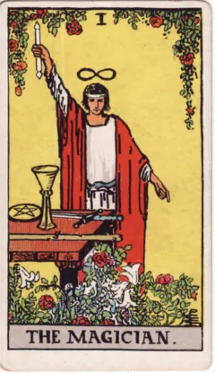
Старший аркан 1
Маг Одна рука поднята, другая направлена вниз; на столе предметы четырёх мастей.
Показать учебное прочтение курса Учебное прочтение курса. Собранное внимание переводит возможность в действие. Полезно различать наличие средств и умение ими воспользоваться.
Какое доступное средство я могу применить сейчас?
Уэйт об этой карте (Pictorial Key) ↗ 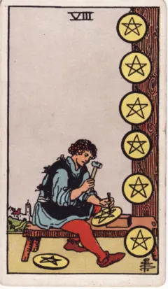
Числовая карта · 8
Восьмёрка пентаклей Мастер последовательно работает над пентаклями.
Показать учебное прочтение курса Учебное прочтение курса. Повторение становится мастерством при внимании к качеству. Тренировка отличается от механического воспроизведения.
Какой один навык я хочу отработать?
Руководство Уэйта: оглавление ↗ Пример чтения пары и место для своей записи →
Все 78 карт Название, деталь или вопрос Группа Все карты Старшие арканы Жезлы Кубки Мечи Пентакли Придворные Число в четырёх мастях Любое число или ранг 1 2 3 4 5 6 7 8 9 10 Сбросить
Показано 78 карт
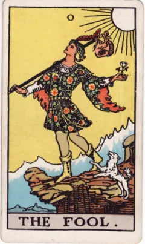
Старший аркан 0
Шут Юноша идёт к краю, держит белую розу; рядом собака и небольшой узел.
Показать учебное прочтение курса Учебное прочтение курса. Начало открывает возможности, но лёгкость требует внимания к дороге. Учебный вопрос об импульсе не исчерпывает мистического образа карты.
Уэйт: подчёркивает необычность странника.
Чего я ещё не заметил(а), увлёкшись новым?
Уэйт об этой карте (Pictorial Key) ↗ Старший аркан 1
Маг Одна рука поднята, другая направлена вниз; на столе предметы четырёх мастей.
Показать учебное прочтение курса Учебное прочтение курса. Собранное внимание переводит возможность в действие. Полезно различать наличие средств и умение ими воспользоваться.
Какое доступное средство я могу применить сейчас?
Уэйт об этой карте (Pictorial Key) ↗ 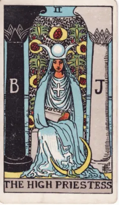
Старший аркан 2
Жрица Между тёмной и светлой колоннами сидит женщина со свитком; за ней завеса.
Показать учебное прочтение курса Учебное прочтение курса. Знание частично открыто и частично скрыто. Пауза, восприимчивость и граница доступа помогают читать образ точнее, чем обещание знать все тайны.
Какой вопрос ещё требует тишины и наблюдения?
Уэйт об этой карте (Pictorial Key) ↗ 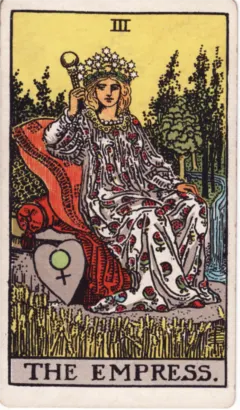
Старший аркан 3
Императрица Женщина среди растительности, рядом пшеница, знак Венеры и вода.
Показать учебное прочтение курса Учебное прочтение курса. Изобилие показано через живую среду. Создание требует питания, времени и условий; это шире буквального материнства.
Какие условия позволят моему делу расти?
Уэйт об этой карте (Pictorial Key) ↗ 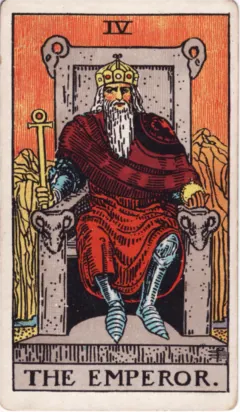
Старший аркан 4
Император Каменный трон с бараньими головами, скипетр и горный фон.
Показать учебное прочтение курса Учебное прочтение курса. Власть получает форму: правило, границу, устойчивое устройство. Такая опора может защищать, а может становиться негибкой.
Какое правило помогает, а какое уже мешает?
Уэйт об этой карте (Pictorial Key) ↗ 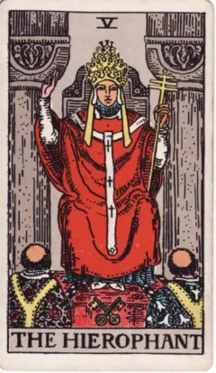
Старший аркан 5
Иерофант Учитель между колоннами, два ученика перед ним, внизу скрещённые ключи.
Показать учебное прочтение курса Учебное прочтение курса. Передача традиции происходит через учителя, обряд и общие формы. Полезно различать сознательное усвоение и привычное повторение.
У кого и чему я сейчас учусь?
Уэйт об этой карте (Pictorial Key) ↗ 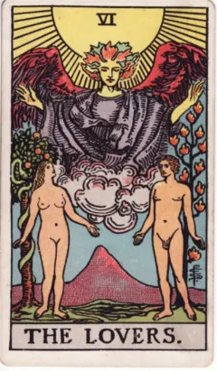
Старший аркан 6
Влюблённые Две обнажённые фигуры под ангелом; за ними разные деревья.
Показать учебное прочтение курса Учебное прочтение курса. Союз связан с открытостью и ценностями. Важно видеть райскую сцену именно этой колоды, не подменяя её сюжетом выбора из других колод.
На каком общем основании возможна близость?
Уэйт об этой карте (Pictorial Key) ↗ 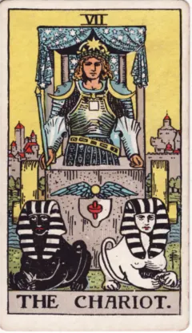
Старший аркан 7
Колесница Возничий в доспехах, впереди два сфинкса разного цвета.
Показать учебное прочтение курса Учебное прочтение курса. Направление удерживает разные силы в одном движении. Одного желания победить недостаточно: нужны согласование и понимание цели.
Что тянет меня в разные стороны?
Уэйт об этой карте (Pictorial Key) ↗ Старший аркан 8
Сила Женщина касается пасти льва, над ней знак бесконечности.
Показать учебное прочтение курса Учебное прочтение курса. Сила действует через спокойствие и связь с живым. Уэйт ставит карту под VIII; в марсельском порядке здесь Правосудие.
Где мягкая настойчивость полезнее давления?
Уэйт об этой карте (Pictorial Key) ↗ Старший аркан 9
Отшельник Фигура на высоте держит посох и фонарь со звездой.
Показать учебное прочтение курса Учебное прочтение курса. Свет помогает различать путь и может быть виден другим. Уединение связано с поиском и зрелостью; оно не обязательно означает беду.
Что я могу прояснить, временно замедлившись?
Уэйт об этой карте (Pictorial Key) ↗ Старший аркан 10
Колесо Фортуны Колесо окружено фигурами; по углам крылатые существа с книгами.
Показать учебное прочтение курса Учебное прочтение курса. Меняется положение участников, остаётся цикл. Карта помогает различать участие в событиях и попытку полностью ими управлять.
Что зависит от меня, а что сейчас меняется само?
Уэйт об этой карте (Pictorial Key) ↗ Старший аркан 11
Правосудие Фигура держит весы и прямой меч; за ней завеса.
Показать учебное прочтение курса Учебное прочтение курса. Соразмерность требует различения и решения. Образ ответственности и последствий сам по себе не сообщает исход реального суда.
Какие факты и интересы нужно взвесить?
Уэйт об этой карте (Pictorial Key) ↗ 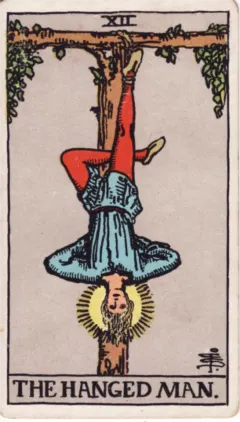
Старший аркан 12
Повешенный Человек подвешен за одну ногу; вокруг головы сияние.
Показать учебное прочтение курса Учебное прочтение курса. Необычное положение меняет взгляд. Пауза позволяет увидеть прежнюю ситуацию иначе; вынужденное бессилие и добровольная остановка всё же различаются.
Что видно из паузы, чего не было видно в движении?
Уэйт об этой карте (Pictorial Key) ↗ 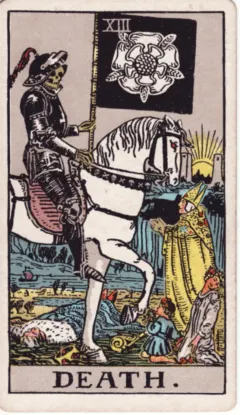
Старший аркан 13
Смерть Скелет на коне движется мимо людей разных положений; вдали восходит свет.
Показать учебное прочтение курса Учебное прочтение курса. Образ завершения не обходит никого. В символическом разборе можно говорить об окончании формы; по карте нельзя устанавливать чью-либо смерть или её срок.
Что уже закончилось, хотя я продолжаю за это держаться?
Уэйт об этой карте (Pictorial Key) ↗ 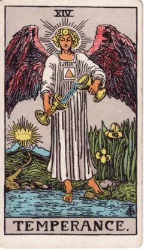
Старший аркан 14
Умеренность Крылатая фигура переливает воду между чашами; одна нога в воде, другая на земле.
Показать учебное прочтение курса Учебное прочтение курса. Разные среды соединяются через меру и движение. Это образ постепенной настройки: не просто всего поровну, а подходящее сочетание.
Что нужно смешивать постепенно, проверяя результат?
Уэйт об этой карте (Pictorial Key) ↗ 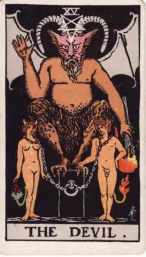
Старший аркан 15
Дьявол Две фигуры связаны цепями у постамента; над ними рогатая фигура.
Показать учебное прочтение курса Учебное прочтение курса. Привязанность становится видимой. Можно рассмотреть соблазн, привычный сценарий и долю собственной свободы, не объявляя человека злым.
Какую связь я принимаю за неизбежную?
Уэйт об этой карте (Pictorial Key) ↗ 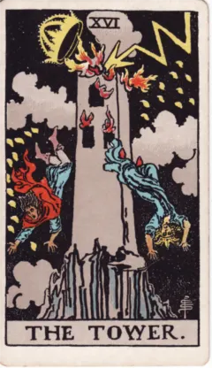
Старший аркан 16
Башня Молния ударяет в башню, корона слетает, люди падают.
Показать учебное прочтение курса Учебное прочтение курса. Резкое разрушение формы показывает её уязвимость. В обсуждении проекта это может быть образом несостоятельной опоры; карта сама не предсказывает катастрофу.
На каком допущении держится моя уверенность?
Уэйт об этой карте (Pictorial Key) ↗ 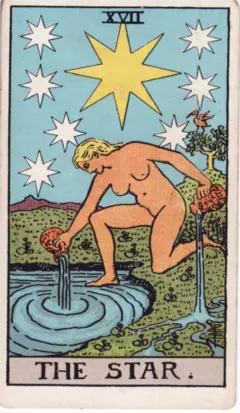
Старший аркан 17
Звезда Женщина льёт воду на землю и в водоём под звёздами.
Показать учебное прочтение курса Учебное прочтение курса. После напряжения возникает открытость и восстановление. Надежда может стать вниманием к тому, что питает жизнь.
Что восстанавливает мои силы без принуждения?
Уэйт об этой карте (Pictorial Key) ↗ 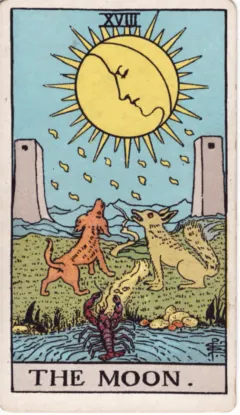
Старший аркан 18
Луна Дорога между башнями; собака и волк смотрят вверх, из воды выходит рак.
Показать учебное прочтение курса Учебное прочтение курса. Знакомое соседствует с чужим, путь освещён неполно. Неясность даёт материал воображению, но ещё не подтверждает подозрения.
Что я вижу, а что достраиваю из тревоги?
Уэйт об этой карте (Pictorial Key) ↗ 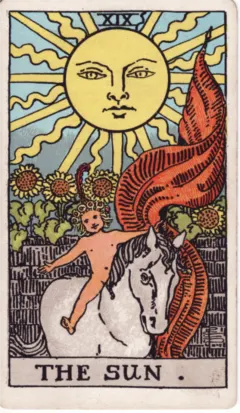
Старший аркан 19
Солнце Ребёнок на белом коне перед подсолнухами, высоко яркое солнце.
Показать учебное прочтение курса Учебное прочтение курса. Открытость и жизненность легче заметить, когда меньше скрытых переходов. Радость можно признать, не требуя обещания вечного успеха.
Чему я могу порадоваться без оговорок?
Уэйт об этой карте (Pictorial Key) ↗ 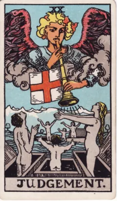
Старший аркан 20
Суд Звук трубы обращён к поднимающимся фигурам.
Показать учебное прочтение курса Учебное прочтение курса. Призыв требует ответа и нового взгляда на прожитое. Христианский образ воскресения важен для сцены; современный вопрос о пробуждении — следующий слой работы.
На какой давно услышанный призыв я готов(а) ответить?
Уэйт об этой карте (Pictorial Key) ↗ 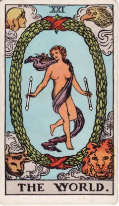
Старший аркан 21
Мир Фигура внутри венка с двумя жезлами; по углам четыре головы — человек, орёл, бык и лев.
Показать учебное прочтение курса Учебное прочтение курса. Целое удерживает разные части. Завершение позволяет увидеть путь и решить, что перейдёт в следующий круг.
По каким признакам я узнаю, что этап завершён?
Уэйт об этой карте (Pictorial Key) ↗ 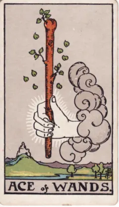
Числовая карта · 1
Туз жезлов Рука из облака держит жезл с листьями.
Показать учебное прочтение курса Учебное прочтение курса. Возникает живой импульс. Начало требует первого действия, но ещё не гарантирует результата.
Во что превратить вдохновение сегодня?
Руководство Уэйта: оглавление ↗ 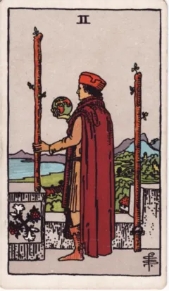
Числовая карта · 2
Двойка жезлов Человек с маленьким глобусом смотрит с высоты.
Показать учебное прочтение курса Учебное прочтение курса. Возможности рассматриваются на расстоянии. Между владением планом и выходом в путь остаётся решение.
Что удерживает меня на стадии планирования?
Руководство Уэйта: оглавление ↗ 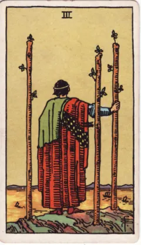
Числовая карта · 3
Тройка жезлов Фигура смотрит на море и корабли.
Показать учебное прочтение курса Учебное прочтение курса. Первое действие расширило горизонт. Теперь приходится ждать отклика и учитывать более широкий мир.
По какому ответу я пойму, что усилие сработало?
Руководство Уэйта: оглавление ↗ 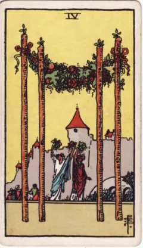
Числовая карта · 4
Четвёрка жезлов Гирлянда соединяет жезлы, люди приветствуют за ней.
Показать учебное прочтение курса Учебное прочтение курса. Временная опора позволяет праздновать и принимать гостей. Порог связывает личное достижение с общей радостью.
Как отметить промежуточный результат вместе?
Руководство Уэйта: оглавление ↗ 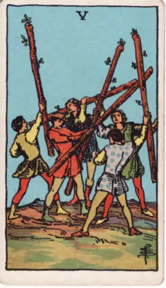
Числовая карта · 5
Пятёрка жезлов Пять фигур поднимают жезлы в несогласованном движении.
Показать учебное прочтение курса Учебное прочтение курса. Энергии много, общего направления мало. Возможны спор, проба сил или соревнование; сцена не доказывает злого намерения.
Какое правило сделало бы столкновение полезным?
Руководство Уэйта: оглавление ↗ 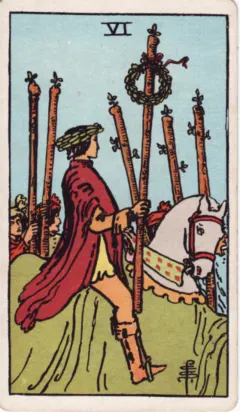
Числовая карта · 6
Шестёрка жезлов Всадник с венком среди людей.
Показать учебное прочтение курса Учебное прочтение курса. Успех становится заметным окружающим. Признание приносит поддержку и новые ожидания.
За что мне важно получить признание?
Руководство Уэйта: оглавление ↗ 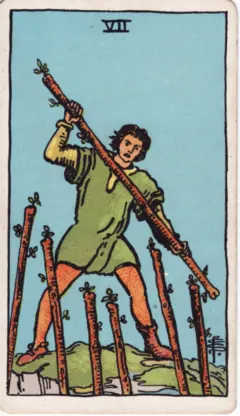
Числовая карта · 7
Семёрка жезлов Фигура на возвышении противостоит жезлам снизу.
Показать учебное прочтение курса Учебное прочтение курса. Позицию приходится удерживать. Различайте нужную защиту и привычку видеть угрозу в любом движении.
Какую границу действительно стоит защищать?
Руководство Уэйта: оглавление ↗ 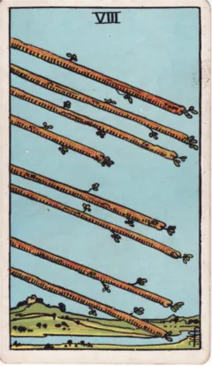
Числовая карта · 8
Восьмёрка жезлов Жезлы летят над открытым пейзажем.
Показать учебное прочтение курса Учебное прочтение курса. Преград движению мало. Скорость помогает завершать переходы, но уменьшает время на пересмотр курса.
Что подготовить до ускорения?
Руководство Уэйта: оглавление ↗ 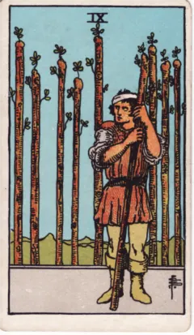
Числовая карта · 9
Девятка жезлов Человек с повязкой стоит перед рядом жезлов.
Показать учебное прочтение курса Учебное прочтение курса. Опыт делает внимательнее к опасности. Выносливость соседствует с усталостью и необходимостью беречь силы.
Как сохранять границу без постоянной обороны?
Руководство Уэйта: оглавление ↗ 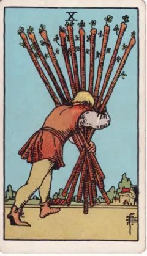
Числовая карта · 10
Десятка жезлов Человек несёт тяжёлую связку к городу.
Показать учебное прочтение курса Учебное прочтение курса. Дело близко к результату, но груз закрывает обзор. Распределение нагрузки становится важнее ещё одного усилия.
Какую часть ноши можно передать?
Руководство Уэйта: оглавление ↗ 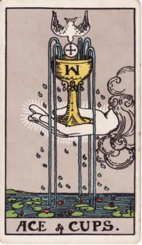
Числовая карта · 1
Туз кубков Чаша над водой; сверху голубь, вниз текут струи.
Показать учебное прочтение курса Учебное прочтение курса. Наполненность ищет выражения. Образ позволяет говорить о восприимчивости, даре и начале эмоциональной связи.
Что сейчас просится быть выраженным?
Руководство Уэйта: оглавление ↗ 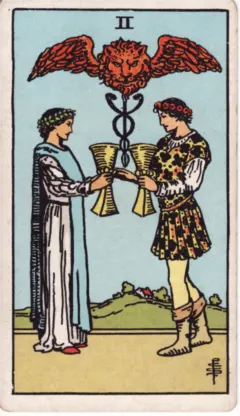
Числовая карта · 2
Двойка кубков Две фигуры протягивают друг другу чаши.
Показать учебное прочтение курса Учебное прочтение курса. Связь создаётся встречным движением. Видеть второго важнее, чем искать подтверждение готовой истории любви.
Что делает обмен взаимным?
Руководство Уэйта: оглавление ↗ 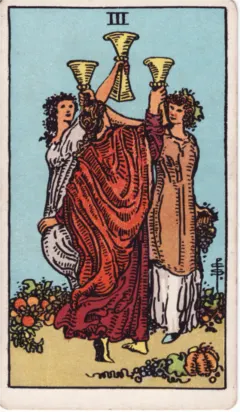
Числовая карта · 3
Тройка кубков Три фигуры поднимают чаши среди плодов.
Показать учебное прочтение курса Учебное прочтение курса. Радость становится общей. Поддержка приходит из дружбы, круга общения и совместного праздника.
С кем хочется разделить хорошее?
Руководство Уэйта: оглавление ↗ 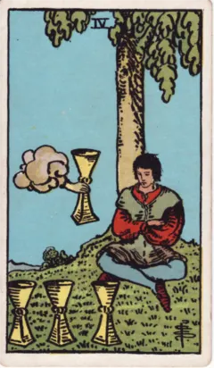
Числовая карта · 4
Четвёрка кубков Сидящая фигура смотрит на чаши; ещё одну подносит рука.
Показать учебное прочтение курса Учебное прочтение курса. Предложение есть, отклика пока нет. Это может быть насыщение, замкнутость или необходимость разобраться в желаниях.
Я отказываюсь осознанно или уже ничего не замечаю?
Руководство Уэйта: оглавление ↗ 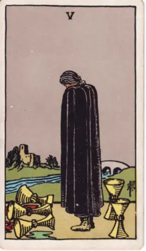
Числовая карта · 5
Пятёрка кубков Три чаши опрокинуты, позади фигуры две целые.
Показать учебное прочтение курса Учебное прочтение курса. Потеря занимает внимание, часть связи остаётся. Не торопите человека радоваться уцелевшему: сначала важно признать утрату.
Что потеряно, а что всё ещё доступно?
Руководство Уэйта: оглавление ↗ 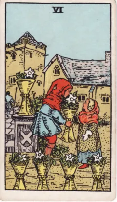
Числовая карта · 6
Шестёрка кубков Ребёнок передаёт другому чашу с цветами.
Показать учебное прочтение курса Учебное прочтение курса. Дар и память создают знакомую атмосферу. Воспоминание может поддерживать настоящее или приукрашивать прошлое.
Что сохранить из прошлого без идеализации?
Руководство Уэйта: оглавление ↗ 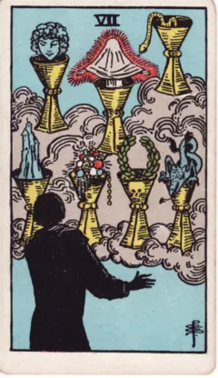
Числовая карта · 7
Семёрка кубков В облаках появляются чаши с разными образами.
Показать учебное прочтение курса Учебное прочтение курса. Воображение умножает желания. Привлекательный образ ещё отличается от возможности с известными условиями осуществления.
Какой вариант можно проверить действием?
Руководство Уэйта: оглавление ↗ 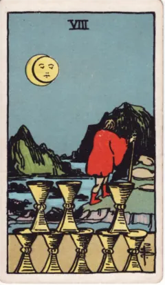
Числовая карта · 8
Восьмёрка кубков Фигура уходит от расставленных чаш к горам.
Показать учебное прочтение курса Учебное прочтение курса. Уход может быть поиском того, чего уже не даёт прежняя ситуация. Важно понимать причину движения.
Чего мне недостаёт в уже собранном?
Руководство Уэйта: оглавление ↗ 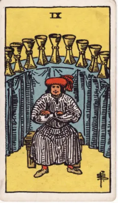
Числовая карта · 9
Девятка кубков Довольная фигура сидит перед рядом чаш.
Показать учебное прочтение курса Учебное прочтение курса. Можно почувствовать достаточность и удовольствие. Собственная удовлетворённость ещё не рассказывает о чувствах всех окружающих.
Что для меня означает «достаточно»?
Руководство Уэйта: оглавление ↗ 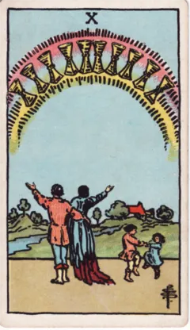
Числовая карта · 10
Десятка кубков Семья под радугой с чашами, дети рядом.
Показать учебное прочтение курса Учебное прочтение курса. Благополучие показано как общая жизнь. За образом гармонии можно рассмотреть условия устойчивой близости.
Как поддерживать радость в повседневности?
Руководство Уэйта: оглавление ↗ 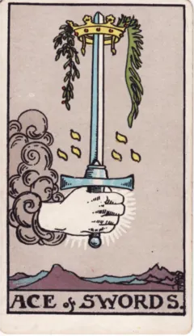
Числовая карта · 1
Туз мечей Рука держит прямой меч с короной.
Показать учебное прочтение курса Учебное прочтение курса. Ясное различение открывает возможность решения. Сила слова предполагает ответственность за применение.
Какую мысль пора сформулировать точно?
Руководство Уэйта: оглавление ↗ 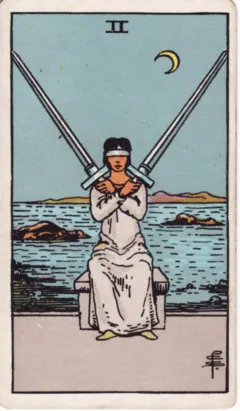
Числовая карта · 2
Двойка мечей Женщина с повязкой держит скрещённые мечи.
Показать учебное прочтение курса Учебное прочтение курса. Равновесие удерживается напряжением. Отсутствие решения может защищать паузу, но не устраняет сам вопрос.
Каких сведений не хватает для выбора?
Руководство Уэйта: оглавление ↗ 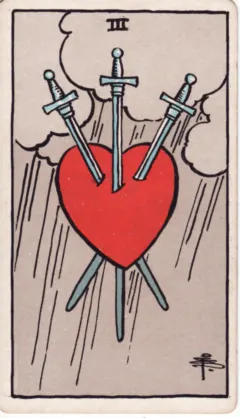
Числовая карта · 3
Тройка мечей Мечи пронзают сердце под дождём.
Показать учебное прочтение курса Учебное прочтение курса. Болезненное разделение выражено прямо. Назовите переживание, не придумывая по одному изображению виновника или измену.
Какие слова признают боль без обвинения?
Руководство Уэйта: оглавление ↗ 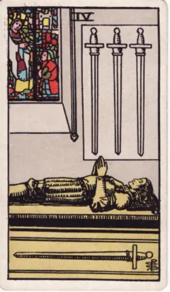
Числовая карта · 4
Четвёрка мечей Лежащая фигура в храмовом пространстве; рядом мечи.
Показать учебное прочтение курса Учебное прочтение курса. Появляется место для восстановления и собранности. Покой отличается от окончательного отказа действовать.
Что поможет действительно отдохнуть?
Руководство Уэйта: оглавление ↗ 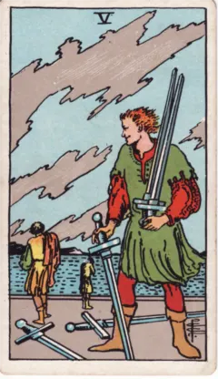
Числовая карта · 5
Пятёрка мечей Один собирает мечи, другие отходят.
Показать учебное прочтение курса Учебное прочтение курса. Победа может разрушить сотрудничество. Итог для победителя и итог для отношений различаются.
Чего будет стоить выигранный спор?
Руководство Уэйта: оглавление ↗ 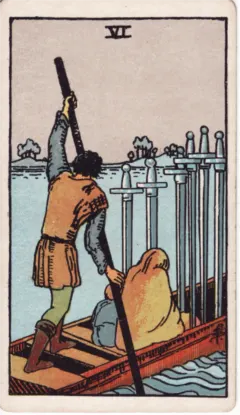
Числовая карта · 6
Шестёрка мечей Лодка перевозит людей и мечи на другой берег.
Показать учебное прочтение курса Учебное прочтение курса. Переход уносит из прежней обстановки, но часть опыта едет с человеком. Новое место не мгновенно меняет внутреннее состояние.
Что я беру с собой в новый этап?
Руководство Уэйта: оглавление ↗ 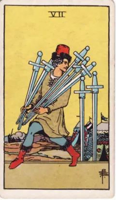
Числовая карта · 7
Семёрка мечей Фигура уносит пять мечей, два остаются.
Показать учебное прочтение курса Учебное прочтение курса. Непрямой ход бывает хитростью, стратегией или уклонением. Обсуждать поведение точнее, чем объявлять человека лжецом.
Что даёт обходной путь и чего стоит?
Руководство Уэйта: оглавление ↗ 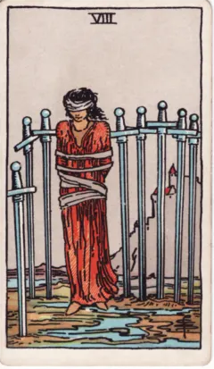
Числовая карта · 8
Восьмёрка мечей Связанная фигура с повязкой среди мечей.
Показать учебное прочтение курса Учебное прочтение курса. Ограничение чувствуется остро, но его границы ещё нужно увидеть. Реальные препятствия нельзя автоматически сводить к страхам.
Какие ограничения внешние, а какие ещё не проверены?
Руководство Уэйта: оглавление ↗ 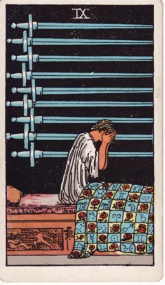
Числовая карта · 9
Девятка мечей Человек сидит на кровати, закрыв лицо.
Показать учебное прочтение курса Учебное прочтение курса. Ночная тревога превращает мысль в тяжёлое переживание. Образ позволяет поговорить о страхе, но не служит диагнозом.
Как отделить факт от пугающего предположения?
Руководство Уэйта: оглавление ↗ 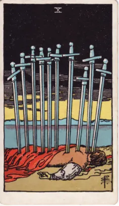
Числовая карта · 10
Десятка мечей Лежащая фигура под мечами; горизонт светлеет.
Показать учебное прочтение курса Учебное прочтение курса. Предельный образ остановки и исчерпания прежнего хода. Вопрос о завершении полезнее буквального предсказания гибели.
Как перестать продолжать закончившуюся борьбу?
Руководство Уэйта: оглавление ↗ 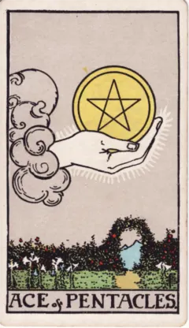
Числовая карта · 1
Туз пентаклей Рука держит пентакль над садом с проходом.
Показать учебное прочтение курса Учебное прочтение курса. Возможность получает осязаемую форму: материал, время, ресурс. Потенциал работает, когда появляется способ его использовать.
Какой реальный ресурс доступен мне сейчас?
Руководство Уэйта: оглавление ↗ Числовая карта · 2
Двойка пентаклей Фигура удерживает пентакли в петле; корабли на волнах.
Показать учебное прочтение курса Учебное прочтение курса. Равновесие подвижно и требует переключений. Гибкость помогает, пока число задач остаётся посильным.
Между какими делами я всё время переключаюсь?
Руководство Уэйта: оглавление ↗ Числовая карта · 3
Тройка пентаклей Мастер обсуждает работу с двумя людьми.
Показать учебное прочтение курса Учебное прочтение курса. Умение встречается с планом и совместным обсуждением. Качество возникает из участия разных компетенций.
Чья обратная связь улучшит мою работу?
Руководство Уэйта: оглавление ↗ Числовая карта · 4
Четвёрка пентаклей Человек крепко удерживает пентакли у головы, груди и ног.
Показать учебное прочтение курса Учебное прочтение курса. Сохранение ресурса даёт безопасность, но может остановить обмен. Выясните, что именно страшно потерять.
Где бережливость превращается в зажатость?
Руководство Уэйта: оглавление ↗ Числовая карта · 5
Пятёрка пентаклей Два человека идут по снегу мимо освещённого окна.
Показать учебное прочтение курса Учебное прочтение курса. Нужда показана как уязвимость и отсутствие включённости. Замечайте доступ к помощи, не делая бедность моральной характеристикой.
Какая помощь нужна и как до неё добраться?
Руководство Уэйта: оглавление ↗ Числовая карта · 6
Шестёрка пентаклей Человек с весами раздаёт монеты просящим.
Показать учебное прочтение курса Учебное прочтение курса. Дарение происходит внутри неравного распределения ресурсов. Помимо щедрости важны условия и достоинство получающего.
Что сделает помощь уважительной?
Руководство Уэйта: оглавление ↗ Числовая карта · 7
Семёрка пентаклей Человек смотрит на выращенное, опираясь на инструмент.
Показать учебное прочтение курса Учебное прочтение курса. Между трудом и результатом есть время. Оценка помогает понять, стоит ли продолжать прежним способом.
Какой признак роста уже можно заметить?
Руководство Уэйта: оглавление ↗ Числовая карта · 8
Восьмёрка пентаклей Мастер последовательно работает над пентаклями.
Показать учебное прочтение курса Учебное прочтение курса. Повторение становится мастерством при внимании к качеству. Тренировка отличается от механического воспроизведения.
Какой один навык я хочу отработать?
Руководство Уэйта: оглавление ↗ Числовая карта · 9
Девятка пентаклей Фигура в саду держит птицу на руке.
Показать учебное прочтение курса Учебное прочтение курса. Достаток даёт больше самостоятельности. Удовольствие от результата соединено с навыком и устройством среды.
Что поддерживает мою самостоятельность?
Руководство Уэйта: оглавление ↗ Числовая карта · 10
Десятка пентаклей Несколько поколений у дома, рядом животные.
Показать учебное прочтение курса Учебное прочтение курса. Ресурс входит в общий уклад. Можно обсуждать наследие, привычки семьи и долговременную устойчивость.
Что я хочу передать дальше?
Руководство Уэйта: оглавление ↗ Придворная карта
Паж жезлов Юная фигура рассматривает жезл.
Показать учебное прочтение курса Учебное прочтение курса. Любопытство ищет применение энергии. Начинающий пробует идею и учится обращаться с собственным энтузиазмом.
Какую небольшую пробу стоит сделать?
Руководство Уэйта: оглавление ↗ Придворная карта
Рыцарь жезлов Конь поднялся, всадник держит жезл.
Показать учебное прочтение курса Учебное прочтение курса. Импульс быстро переходит в движение. Смелости полезно помнить о цели после первого рывка.
Что поможет довести начатое до результата?
Руководство Уэйта: оглавление ↗ Придворная карта
Королева жезлов Жезл, подсолнух и кошка возле трона.
Показать учебное прочтение курса Учебное прочтение курса. Тёплая уверенность поддерживает инициативу. Рассматривайте манеру присутствия, а не обязательный пол или внешность человека.
Как поддержать чужую инициативу, сохраняя свой огонь?
Руководство Уэйта: оглавление ↗ Придворная карта
Король жезлов Фигура на троне держит живой жезл.
Показать учебное прочтение курса Учебное прочтение курса. Энергия получает направление и ответственность. Задавая курс, важно учитывать, как за ним пойдут другие.
Куда я направляю общие усилия?
Руководство Уэйта: оглавление ↗ Придворная карта
Паж кубков Из чаши выглядывает рыба.
Показать учебное прочтение курса Учебное прочтение курса. Неожиданный отклик требует любопытства. Можно услышать новое чувство до того, как его объяснишь.
Что меня удивляет в собственном отклике?
Руководство Уэйта: оглавление ↗ Придворная карта
Рыцарь кубков Всадник спокойно везёт чашу.
Показать учебное прочтение курса Учебное прочтение курса. Чувство превращается в предложение и жест. Красота намерения убедительнее, когда за ней следует действие.
Как выразить намерение поступком?
Руководство Уэйта: оглавление ↗ Придворная карта
Королева кубков Фигура смотрит на украшенную чашу у воды.
Показать учебное прочтение курса Учебное прочтение курса. Глубокая восприимчивость нуждается в границе. Внимание к чужому переживанию не означает раствориться в нём.
Как сочувствовать, сохраняя опору?
Руководство Уэйта: оглавление ↗ Придворная карта
Король кубков Трон среди волн, в руках чаша и скипетр.
Показать учебное прочтение курса Учебное прочтение курса. Устойчивое обращение с чувствами допускает их движение. Спокойствие можно исследовать как навык, а не отсутствие эмоций.
Как оставаться в разговоре при сильных чувствах?
Руководство Уэйта: оглавление ↗ Придворная карта
Паж мечей Фигура с мечом оглядывается на ветреном фоне.
Показать учебное прочтение курса Учебное прочтение курса. Ум замечает сигналы и задаёт вопросы. Бдительность полезна, пока предположение не объявлено фактом.
Какой вопрос проверит мою догадку?
Руководство Уэйта: оглавление ↗ Придворная карта
Рыцарь мечей Всадник стремительно несётся с мечом.
Показать учебное прочтение курса Учебное прочтение курса. Мысль требует осуществления. Решительность выигрывает от проверки условий и внимания к возражениям.
Что уточнить перед резким действием?
Руководство Уэйта: оглавление ↗ Придворная карта
Королева мечей Прямой меч и ладонь, обращённая наружу.
Показать учебное прочтение курса Учебное прочтение курса. Ясное различение сочетается с готовностью выслушать. Граница не обязана становиться холодностью или приговором.
Как сказать точно и оставить место ответу?
Руководство Уэйта: оглавление ↗ Придворная карта
Король мечей Фигура сидит прямо с мечом перед собой.
Показать учебное прочтение курса Учебное прочтение курса. Решение опирается на принципы и оценку. Важно замечать пределы собственного суждения даже при больших полномочиях.
На каком основании я выношу решение?
Руководство Уэйта: оглавление ↗ Придворная карта
Паж пентаклей Фигура сосредоточенно рассматривает пентакль.
Показать учебное прочтение курса Учебное прочтение курса. Внимание удерживается на конкретном предмете. Его можно рассмотреть, попробовать и понять руками.
Какой материал поможет учиться на практике?
Руководство Уэйта: оглавление ↗ Придворная карта
Рыцарь пентаклей Неподвижный конь, за всадником обработанная земля.
Показать учебное прочтение курса Учебное прочтение курса. Постоянство создаёт результат медленнее разового рывка. Стоит замечать, где устойчивость стала инерцией.
Какой ритм я смогу поддерживать долго?
Руководство Уэйта: оглавление ↗ Придворная карта
Королева пентаклей Пентакль в руках фигуры среди сада.
Показать учебное прочтение курса Учебное прочтение курса. Забота выражается в устройстве повседневности: еда, пространство, время, телесное удобство. Роль доступна человеку любого пола.
Как сделать среду удобнее для жизни и работы?
Руководство Уэйта: оглавление ↗ Придворная карта
Король пентаклей Трон среди знаков достатка и растительности.
Показать учебное прочтение курса Учебное прочтение курса. Умение распоряжаться ресурсами проверяется устойчивостью созданного. Богатство образа не равно обещанию денег.
Что делает моё дело устойчивым?
Руководство Уэйта: оглавление ↗ Буквы и числа Гематрия, ранги карт и сефирот связаны по-разному. В отдельном уроке разберём расчёт по буквам и научимся не путать эти операции.
Перейти к гематрии → Источники изображений: Wikimedia Commons, исходные рисунки Памелы Колман Смит для колоды Уэйта–Смит (1909). Ссылка на карточке ведёт к файлу и сведениям о нём. Наблюдения и вопросы написаны для этого курса; традиционные описания можно сопоставить с The Pictorial Key to the Tarot Уэйта (1910).
Разбираем книги о каббалистическом Таро У Форчун учимся читать Древо и различать сефирот, пути и масти. У Кроули разбираем устройство Тота, сравниваем соответствия и пишем собственный комментарий к трём картам.
Мистическая Каббала → · Книга Тота → · Все книжные модули →
Ритуальная магия · новая большая линия
Геката, каббала и Таро 28 занятий: от античных гимнов и теургии к Жрице, образу врат и герметическим соответствиям. Примеры, самостоятельные работы, возвращение к изученному и отдельная тетрадь.
Как связаны три линии →
Открыть маршрут →